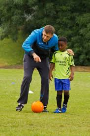

Use These Tips To Become A Soccer Pro
In order to become the best soccer player you can be, you must strive to learn the skills required. It is hard work, but it can be extremely fun at the same time. If you love the sport, and are dedicated to learning how to play, then this article is for you. Keep reading so you can figure out how to step your game up.
When you get the ball in soccer, make sure to play it quickly. You need to get and give the ball quickly in just a couple touches. If you hold on to it too long, you increase your chances of losing it. Even if you don't lose it, holding it too long can destroy an attack and provide an opportunity for the other team to get back on defense.

Switch the ball from one side to the other if you are trying to get away from a defender. Kick the ball with the inside of your foot and try gaining speed so you can escape the defender. Shield the ball with your body if the defender catches up to you. Curso de Coaching Deportivo Online
Look for numerical advantage on the field. You want to pass the ball to a player who is near others from your team rather than a player who is surrounded by defenders. Talk to your team about this strategy and encourage them to form groups in an empty area so you can easily gain a numerical advantage.
When you have the soccer ball and an opponent is approaching you, fake like you are about to pass it. They may hesitate and give you enough time to decide what to do next. Use your arms to distract him.
Soccer is a team sport so it is important to cooperate with your team to work as one unit, instead of single players. If someone is open, pass the ball. Trying to do it all can end up hurting your team, and essentially losing the game. Working together as a team is the best way to win games.
When kicking a long kick to a teammate, approach the ball at a 35 degree angle. This allows you to fully use your kicking leg at full force. Use your arms to help you keep your balance while placing your non kicking foot directly beside the ball. Keep the ball close to the ground for best results.
When passing the ball make sure that your heel is down and your toes are pointed upward. This allows you to use your foot like a putter. By practicing this technique often, it will soon come naturally when it is time to pass the ball to a teammate during an actual game.
It is important that you keep in mind that soccer is a team effort. While it can be quite tempting to work on making goals all on your own, you need to work on passing the ball to others. This will make them feel more friendly toward you, and increase the chances they will return the favor.
If you are a parent or coach, never scream anything at a player while they have control of the ball. This may distract them and make them fumble a bit. The best thing to do is to allow them to make the pay, then encourage them to do better if it was not done well.
There are all different types of soccer shots, and you should try your best to use a variety of them. It may seem practical for you to use standard shots a lot of the time, but there are other times where it may be necessary to make a chip shot, inside shot, or some other type of shot.
You need to triangulate if you are to break strong defenses. You can create confusion for your opponent by quickly passing the ball between your teammates. Use a team effort and short and effective passes to push through the tight field. Always be prepared to react to your teammate when he tries to do this too.
Develop a strong core. By strengthening your abdominal and back muscles, you will increase your range of motion. This will result in better control of all of your extremities. To help you develop a strong set of core muscles, you must incorporate strength training exercises into your daily fitness routine.
Make sure you keep a combative spirit about your play. You want to show your coach that you have the right attitude in order to help defend and help your team score without giving up. If you desire to have a spot on the main team, this is key to your success.
One of the most important things when it comes to soccer is speed. There are many ways to learn how to run faster, one of the easiest ways to increase your speed is to add 5 pound weights to each ankle while running your drills. By running with weights, you will be able to run much faster once the weights are removed.
To help your team develop good defensive skills, try practicing without a goalie. Inform each team that they are responsible for defending the goal by keeping the ball out of shooting range. By doing this for 30 minutes each day, the defensive skills on your team will expand exponentially. Curso de Coaching Deportivo Online
Hopefully you feel like the tips that have been used in this article can move your soccer game forward. Soccer is very interesting and so much fun, but it requires that you practice and become increasingly knowledgeable about the sport. Keep in mind what you've learned so that you can bring it on the field.